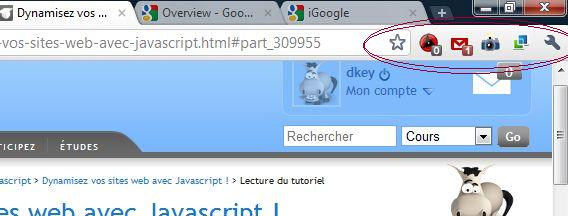

Salut à tous. Dans ce tutoriel, vous allez apprendre à faire une extension google chrome !
A quoi ça sert ? Il y a des milliers d'utilisations différentes. Vous pouvez gagner du temps quand vous surfez, modifier automatiquement des sites web en éliminant ce qui ne vous plaît pas, faire des blagues à vos amis, espionner votre famille, tricher aux questionnaires, afficher le nombre de messages que vous avez, chronométrer votre temps de surf, faire cuire vos pâtes...
En 2 heures 59, vous serez devenu le maître de la navigation web.
Hem, vous avez déjà entendu parler de google chrome ?
Pour information, google chrome est le navigateur fait par... google. Sa première version a été conçue en 2007 par des anciens développeurs de firefox, puis son code source a été donné à des développeurs libres, fondant ainsi la communauté Chromium.
Chrome n'est pas lui-même open-source, mais Chromium l'est totalement. Chrome n'a que quelques fonctionnalités supplémentaires, comme le logo.
Je dirai "extensions chrome" par abus de langage, car en fait, ces extensions sont également compatible avec chromium et tous ses dérivés (d'ailleurs, c'est le logo de Chromium qui est repris pour ce tutoriel). En fait, si j'utilise cette expression, c'est pour ces deux raisons :
Google gère la galerie d'extensions,
On trouve la documentation de la création des extensions sur code.google.
Les extensions chrome sont des mini programmes qu'on ajoute aux dérivés de chromium, qui permettent de leur rajouter de fonctionnalités.
Plusieurs raisons peuvent vous pousser à en faire vous-même : - Vous avez envie de vous rendre utile aux autres, en leur proposant une extension dont ils ont besoin. - Vous avez besoin de faire des manipulations qui ne concernent que vous sur certains sites, ou d'automatiser des taches longues ou fastidieuses. - Vous avez envie de vous amuser avec des extensions parfois inutiles, parfois étonnamment pratiques.
Tenez, à la moitié du tutoriel, j'ai réalisé que j'oubliais l'espace avant les caractères ?:! de façon systématique (merci pour le rappel de Thunderseb). Alors je me suis bricolé une extension qui me les rajoute automatiquement dans la zone de rédaction, et qui me rajoute en prime sous "[-] hauteur [+]" (sous les smilies) une option "[-] largeur [+]".
Vous apprendrez aussi à faire cuire vos pâtes, à enregistrer l'historique dans l'extension de sorte qu'on ne puisse pas le supprimer, à faire des mauvaises blagues à vos amis, ou même à tricher aux jeux en lignes codés en javascript.
Mais si vous créez quelque chose de vraiment utile, vous pouvez également le faire partager à tous via google... et croyez-moi, c'est remarquablement facile !
On peut également citer d'autres projets sur le site du Zero, comme celui de pepetiti : BeeZik Multi, qui permet de gagner un temps considérable pour télécharger des musiques.
Vous pouvez même créer une extension uniquement dédiée à votre site, pour ajouter des fonctionnalités à celui-ci, et séduire les utilisateurs (imaginez une bannière sur votre site : "téléchargez notre extension chrome !" ).
Il faut savoir que les extensions de chrome utilisent comme langage le javascript. Il vous faut donc connaitre au moins les bases de ce langage, et là, je vous renvoie au tutoriel de Nesquik69 et Thunderseb.
C'est mieux d'avoir une bonne connaissance du javascript, mais si vous ne voulez apprendre que les bases, j'indiquerai de temps à autre les connaissances requises. ;)
Si le tutoriel de Nesquik69 et Thunderseb n'est toujours pas fini quand vous lisez le mien, sachez que j'ai appris moi-même le javascript par un tutoriel plus vieux, celui de JoSé2 (il commence à devenir obsolète). J'ai également utilisé le tutoriel de Fedaykin, et un autre tutoriel de Nesquik69 et Thunderseb. J'indiquerai quand vous devrez aller piocher dans ces tutoriels, et je mettrai à jour en fonction de l'avancement du nouveau tutoriel, de 20% quand j'écris ces lignes.
Ce tutoriel a pour but de vous apprendre à créer des extensions (vous l'aviez deviné ? :p ).
Il existe une documentation très fournie de google sur le développement de chrome. Mais déjà qu'une documentation n'est pas toujours simple à comprendre, il faut également considérer que beaucoup de programmeurs sont arrêtés par cette phrase :
Citation : google
Vous voudriez créer et mettre en ligne votre propre extension ? Voici comment faire (en anglais uniquement).
:lol:
J'aimerai préciser que ce tutoriel n'est pas une infâme et mauvaise traduction de la documentation de google (en plus je parle bien anglais, donc elle ne saurait être mauvaise :D ).
Il a pour vocation de vous simplifier considérablement la tâche : - en proposant un certain nombre de TPs et d'exemples. - en décortiquant la documentation pour en faire quelque chose de plus facilement compréhensible (j'ai bien lu 10 fois chaque page avant d'y arriver).
Cependant, comme le tutoriel javascript de thunderseb et nesquik69 n'est pas terminé quand je rédige mon tutoriel, il est possible que certaines de mes précisions soient inutiles dans le futur, mais je mettrai à jour le tutoriel en supprimant celles-ci.
Eh bien, l'introduction n'était pas si dure à suivre, non ? Quoi, vraiment trop court et simple ? Presque inutile ?
Tant mieux, parce que ce n'était pas censé être le chapitre le plus difficile. Rassurez-vous, vous aurez à réfléchir un peu plus pendant les TPs ! :D
Bon, je sais que tout le monde veut des résultats, et vite. :pirate: Je vous donc vous faire une fleur. Vous allez faire votre première extension : "Hello world" "Hello Zozor" (juste pour casser les bonnes vieilles habitudes).
Vous avez donc besoin d'un éditeur de texte comme notepad++ (de préférence avec coloration syntaxique). Vous aurez également certainement besoin de google chrome (ou un de ses frères).
Attention, voici l'objectif de ce chapitre : Afficher notre propre extension dans la barre d'extensions de google chrome.

L'extension sera toujours visible à l'endroit entouré sur l'image, c'est ce que google appelle une action de navigateur (browser action).
Vous avez besoin de créer une nouveau dossier pour chaque extension. Créez un dossier où vous voulez sur votre ordinateur appelé tutoriel Chrome (ce n'est qu'un exemple, vous pouvez l'appeler autrement, c'est juste le nom que je vais utiliser pour qu'on s'y retrouve ;) ).
Création du manifeste
Créez un premier fichier dans ce dossier, le manifeste : "manifest.json" (sans "e" à manifeste, car c'est l'écriture anglaise).
C'est le fichier le plus important de votre extension.
Je vous expliquerai plus tard ce qu'est le format JSON, si vous ne savez pas.
Vous allez ouvrir votre manifeste, et copier-coller sans forcément chercher le comprendre le code suivant.
Vous allez créer la "popup", c'est-à-dire la fenêtre qui se lance quand on clique sur votre extension.
Elle s'appellera ... bah cherchez vous-même, il faut un peu d'intuition en programmation !
La réponse est à la ligne 7 du manifeste.
Vous créez donc un fichier vide appelé "dire_bonjour.html". Là vous allez devoir utiliser vos connaissances en javascript. Vous allez mettre dans cette page le code qui affichera "Hello Zozor".
Il reste tout de même une dernière étape : l'importation de l'extension sur google chrome. Elle est très simple, comme vous allez le voir.
Ouvrez google chrome.
Ouvrez le menu de google chrome, à droite de la barre d'extension.
Allez dans le menu "outils".
Cliquez sur "extensions".
Si vous avez un + devant "Mode développeur", cliquez dessus.
Choisissez "charger l'extension non empaquetée"(ou "load unpacked extension").
Sélectionnez le dossier de votre extension : "tutoriel Chrome".
Si vous avez une erreur, regardez la dernière partie du tutoriel.
Vous avez à présent dans votre barre d'extension une case blanche, vide. Maintenant, cliquez dessus... :magicien: "Hello Zozor"
:'( Mais... L'icône est blanche, on voit rien... N'ayez crainte, on va s'en occuper !
Quelques ajouts graphiques
Dans la popup
Vous devez voir une bulle vide apparaître, pointant sur votre extension. Ceci est votre popup. Pour rajouter un peu de déco, vous pouvez ajouter du code dans "dire_bonjour.html". Personnellement, j'ajoute juste la balise suivante :
Dans le dossier de votre extension ("tutoriel Chrome"), enregistrez l'image suivante : Renommez la "icone.png".
Vous obtenez donc un dossier avec à l'intérieur :
Le manifeste : "manifest.json",
La popup : "dire_bonjour.html",
L'icône : "icone.png".
Dans google chrome, faites à nouveau la manipulation vue précédemment, mais au lieu de cliquer sur "load unpacked extension", cherchez votre extension dans la liste en-dessous du bouton, et cliquez sur "Rafraîchir" (ou "reload"). Cela réactualisera votre extension, avec l'image et les nouvelles lignes de code.
Miracle : dans la barre d'extensions apparaît l'image enregistrée ! Et quand vous cliquez dessus, vous devriez voir une fenêtre de dialogue "Hello Zozor", suivie de la bulle avec son image. :magicien:
Cette sous partie n'est absolument pas nécessaire si vous n'avez pas eu de problème, mais je vous recommande vraiment de la lire (personne n'est parfait, vous allez certainement faire des fautes).
N'hésitez pas à copier-coller mon code si vous avez des bugs, pour vous assurer que c'est dû à un problème de code.
Erreur 1 : Manifest is not valid JSON
Citation : google chrome
Could not load extension from '/home/dkey/Documents/programmation/gc extensions/tutorielChrome'. Manifest is not valid JSON. Line : 8, column : 3, Syntax error.
Indique une erreur de syntaxe du manifeste. Vérifiez que vous n'avez pas oublié ou rajouté de :
Virgule
Guillement
Accolade
Deux points
Dans mon cas, le problème vient de l'omission de la virgule, fin de la ligne 7.
Could not load extension from '/home/dkey/Documents/programmation/gc extensions/tutorielChrome'. Fichier manifeste absent ou illisible.
Indique l'absence de fichier manifeste. Je vous l'avais bien dit d'appeler ce fichier très exactement "manifest.json" ! :colere: . Faites attention à avoir :
Choisi le bon dossier.
Bien nommé le manifeste "manifest.json" sans "e".
Débugger les erreurs de syntaxe
Pour éviter toute erreur de syntaxe comme l'erreur 1, il y a certains sites qui proposent des outils très pratiques. Sur ce site, vous pouvez copier votre code et le tester. C'est plus pratique que de tenter d'ouvrir l'extension avec chrome à chaque fois, et ça fournit plus d'informations et d'options.
Par exemple, le site me fournit comme code d'erreur pour l'erreur 1 :
Citation : http://www.jslint.com/
Error: Problem at line 8 character 9: Expected '}' and instead saw 'popup'.
"popup" :"dire_bonjour.html"
Problem at line 8 character 17: Expected '}' and instead saw ':'.
"popup" :"dire_bonjour.html"
Problem at line 8 character 18: Expected '(end)' and instead saw 'dire_bonjour.html'.
"popup" :"dire_bonjour.html"
JSON: bad.
Ainsi, on sait qu'il était attendu qu'on ferme l'accolade au lieu de rajouter une ligne. On devine alors l'oubli de la virgule.
Voilà, vous avez créé votre première extension. La classe, non ? :soleil:
Vous pouvez améliorer un peu votre extension. Je ne vous ferai pas l'injure de vous expliquer comment fonctionne le html/css et le javascript, je considère que vous connaissez au moins les bases ! Certes, on ne peut encore rien faire de transcendant, mais quand même...
Je vous mets intégralement mon code "amélioré" de l'extension que j'ai rebaptisé "Zozor, donne la patte".
Ce n'est pas forcément nécessaire pour l'instant, mais bien plus propre.
manifest.json :
{
"name":"Zozor, donne la patte !",
"version":"1.0",
"description":"Zozor vous souhaite bien le bonjour",
"browser_action":
{
"default_icon": "icone.png",
"popup":"dire_bonjour.html"
}
}
dire_bonjour.html :
<!DOCTYPE html>
<html>
<head>
<script>
function saluer()//gestion de la boite de dialogue
{
alert("zozor te salue");
}
</script>
<style>
body
{
background-color:green;
}
</style>
</head>
<body onload="saluer()">
<img onclick="saluer" id="zozor" src="http://www.siteduzero.com/Templates/images/designs/2/zozor3.png" alt="texte alternatif"/>
</body>
</html>
Si vous voulez plus d'exemples, je vous suggère d'aller voir l'extension de Rizoom ici (c'est un copain, je lui fais un peu de pub ;) ). Il l'a fait uniquement avec les connaissances de ce chapitre, et un tutoriel javascript du site du zero. C'est largement à votre portée, ça se fait en 10 minutes (ah, ça, c'est moins sympa pour lui) !
Et quand vous avez fait ça, si vous êtes toujours insatisfaits, c'est très bien : chapitre suivant ! ^^
Pour l'instant, vos extensions sont figées. Elles sont comme neuves à chaque fois que vous les lancez. Dans ce chapitre, nous verrons comment stocker des données, de telle manière qu'on puisse les réutiliser à chaque instant.
Eh bien, pour retenir les préférences de l'utilisateur, bien sûr. Par exemple, vous ne trouvez pas un peu fade l'extension du chapitre précédent ?
Moi, j'aimerai bien qu'elle connaisse mon nom, qu'elle sache combien de fois elle m'a parlé, ma couleur préférée... Et les utilisateurs de votre extension aussi ! On aime croire qu'on est le centre du monde.
Comment faire
Il existe deux méthodes pour sauvegarder les données de l'utilisateur de façon durable :
Sur son site.
Sur l'ordinateur du client.
Vous n'utiliserez la première que dans certains cas particuliers. Vous vous rendez compte, si vous avez 100 000 utilisateurs, vous allez devoir stocker 100 000 fois l'information sur votre site ! Cela peut cependant être utile pour avoir le top 100 des résultats, si l'extension est un jeu, par exemple, mais nous en parlerons après.
Au lieu de ça, on va plutôt utiliser une nouveauté du html5 : localStorage. On va donc stocker les données sur l'ordinateur du client. C'est déjà mieux pour la protection de ses données, et ça vous fait économiser un hébergement, beaucoup de temps de transmission, et énormément de place.
Ce n'est pas le sujet de mon tutoriel, alors je vous renvoie vers un autre tutoriel à ce propos (3 minutes pour lire la partie qui nous intéresse). DOM Storage et Persistence Comme on utilise uniquement chrome et ses dérivés, vous n'avez pas besoin de la partie sur Persistence.
Voici une autre méthode que vous allez peut-être rencontrer, dont Thunderseb n'a pas (encore) parlé.
var valeur=localStorage.getItem(clef); //récupérer la valeur
localStorage.setItem(clef,valeur); //donner une nouvelle valeur
localStorage.removeItem(clef); //supprimer l'item
var clef=localStorage.key(n); //récupérer la clef du n item.
localStorage.clear(); //vider localStorage
localStorage.length(); //le nombre de clef de localStorage
On utilise un peu moins cette méthode, mais elle est quand même très pratique pour des actions particulières, comme la suppression de la totalité des éléments du localStorage, ou pour récupérer la clef associée à un index.
Dans notre extension
Vous vous souvenez de notre extension, au chapitre précédent ? Eh bien, je veux qu'elle donne également le nombre d'activations de l'extension.
Allez, c'est parti, débrouillez-vous !
Astuces :
Seule la popup est à modifier.
Testez tout d'abord l'existence de l'élément.
Convertissez votre valeur en nombre, car localStorage renvoie une chaîne de caractères.
Ce qui suit est ma réponse, essayez tout seuls avant de regarder la correction ! Et enlevez vous un point par astuce utilisée.
Voici mon nouveau code de popup :
<!DOCTYPE html>
<html>
<head>
<script>
function saluer()//gestion de la boite de dialogue
{
if (!localStorage['compte'])//le compte n'existe pas (première utilisation ou réinstallation)
{
localStorage['compte']=1;
alert('Zozor te salue pour la première fois !');
}
else //le compte existe
{
localStorage['compte']=parseInt(localStorage['compte'])+1;//on transforme la chaine de caractère en int, on incrémente, puis on stocke le nouveau nombre
alert('Zozor te salue une '+localStorage['compte']+'eme fois !');
}
}
</script>
<style>
body
{
background-color:green;
}
</style>
</head>
<body onload="saluer()">
<img id="zozor" src="http://www.siteduzero.com/Templates/images/designs/2/zozor3.png" alt="texte alternatif"/>
</body>
</html>
Vous pouvez tout à fait avoir fait différemment, du moment que ça marche, c'est bien !
Généralement, vous n'en aurez pas besoin de plus, mais ça peut arriver. Heureusement, google a envisagé le cas où une extension aurait besoin de plus de place. Il vous suffit d'ajouter dans le manifeste ce code :
"permissions": ["unlimitedStorage"],
Enlevez la virgule si vous insérez cette ligne à la fin de votre code.
On pourrait monter tout un dispositif pour enregistrer les options, avec un lien dans la popup, qui, par fenêtres de dialogue permettrait d'enregistrer les préférences de l'utilisateur...mais j'ai dit que ce serait un chapitre simple et rapide, donc je vous montre quelque chose de bien plus simple, rapide, et vraiment plus classe !
Une page d'option ?
Une page d'option est une page dans laquelle l'utilisateur choisit ses préférences. C'est exactement ce qu'il nous faut : une page dédiée à la saisie des préférences dans laquelle on peut utiliser localStorage autant qu'on veut !
Dans certaines extensions, il y a un lien dans la popup. Sinon, on accède à cette fameuse page d'options en faisant un clic droit puis "options" sur l'icône dans la barre d'extensions. On peut également y accéder, dans la page de gestion des extensions par le lien "options", après le lien "désinstaller".
La méthode pour mettre un lien dans sa popup est un peu étrange et fait appel à des notions qui vous sont encore inconnues, ce ne sera donc pas pour aujourd'hui ! Je vous la donnerai une autre fois, promis. Bien sûr, on peut utiliser la méthode javascript window.open('sous_dossier/page_options','page d\'option') , mais elle ouvre dans une nouvelle fenêtre (on préférera ouvrir un nouvel onglet), et puisqu'on est dans une extension chrome, autant utiliser la méthode définie pour lui.
Créer une page d'options
Ajouter la page
Certains se posent certainement la question :
Euh... sur mon extension, quand je fais un clic droit, je ne peux pas cliquer sur "options", c'est normal ?
Oui. Parce que, comme google chrome est malin, il ne nous laisse pas aller sur des pages inexistantes. Il faut donc lui indiquer qu'on se met à l'écriture d'une page d'options. Et pour cela, il faut rajouter dans le manifeste, juste au-dessus de "browser_action" :
"options_page":"page_options.html",
Ce qui me donne donc ce manifeste :
{
"name":"Zozor, donne la patte!",
"version":"1.0",
"description":"Zozor vous souhaite bien le bonjour",
"options_page":"page_options.html",
"browser_action":
{
"default_icon": "icone.png",
"popup":"dire_bonjour.html"
}
}
Voilà, vous n'avez plus qu'à créer un fichier appelé "page_options.html", dans lequel vous mettrez tout ce que vous voudrez pour vos options, par exemple la couleur préférée de l'utilisateur en fond d'écran, et son nom dans la boite de dialogue.
Que mettre dans cette page
Je devrais vous laisser vous débrouiller tout seul, avec tout ce qu'on a fait dans la deuxième sous partie ! Les flèches sont sans doute déjà en train de faire leurs pages d'options. Bon, comme je n'ai jamais été moi-même une flèche, je vous donne quelques indices pour vous éviter de vous perdre ! ;)
Vous accédez au localStorage de votre page d'options sans problème. Il ne diffère pas de la popup à la page d'options. C'est d'ailleurs tout l'intérêt de la chose !
La page se code exactement comme une page web. Si vous voulez rajouter une feuille de style, vous la mettez dans le dossier et vous indiquez comme adresse (dans votre balise meta) "feuilleStyle.css" ou "sousDossier/feuilleStyle.css" si vous avez un sous dossier (là encore, vous pouvez changer les noms).
Une feuille de style commune à toutes les extensions sera conseillée dans le futur, mais pour l'instant elle n'est pas achevée, donc faites comme bon vous semble. Si vous voulez savoir comment tout ça évolue, c'est ici : crbug.com/25317 (en anglais, of course).
Vous n'avez peut-être pas encore rencontré la fonction getElementById, si vous n'avez pas lu la deuxième partie du tutoriel de Nesquik69 et Thunderseb (au moins le premier chapitre). Cette fonction est nécessaire pour récupérer les valeurs choisies par l'utilisateur.
Il serait idéal que les options soient sélectionnées automatiquement si elles ont déjà été données.
Assez parlé, voici ma solution. La page d'options
<!DOCTYPE html>
<html>
<head>
<title>Zozor options</title>
<style>
</style>
<script>
function restaurerLesOptions()//resélectionner les options déja choisies
{
document.getElementById('nom').value=localStorage['nom'];//remplissage du champs de nom
var couleur = localStorage['couleur'];//sélection de la liste déroulante de couleur (un peu plus dur)
if (!couleur){
return;
}
var choix = document.getElementById('couleur').getElementsByTagName('option');
for (var i = 0; i < choix.length; i++)
{
if (choix[i].value == couleur)
{
choix[i].selected = "true";
break;
}
}
}
function enregistrer()//enregistrer les options, fonction appelée par le click sur le bouton
{
localStorage['nom']=document.getElementById('nom').value;
localStorage['couleur']=document.getElementById('couleur').value;
}
</script>
</head>
<body>
<h1>Options de l'extension</h1>
<label for="nom">Nom</label><input type="text" name="nom" id="nom"/>
<label for="nom">Couleur préférée</label>
<select name="couleur" id="couleur">
<option value="green">vert</option>
<option value="red">rouge</option>
<option value="blue">bleu</option>
<option value="white">blanc</option>
<option value="white">gris</option>
</select>
<input type="button" onclick="enregistrer()" value="enregistrer"/>
<script>
restaurerLesOptions();//au chargement de la page, on restaure les options
</script>
</body>
</html>
La popup
<!DOCTYPE html>
<html>
<head>
<script>
function saluer()//gestion de la boite de dialogue
{
var ajouterNom= (localStorage['nom'])? ', ' + localStorage['nom'] : '';
if (!localStorage['compte'])//le compte n'existe pas (première utilisation ou réinstallation)
{
localStorage['compte']=1;
alert('Zozor te salue pour la première fois'+ajouterNom);
}
else //le compte existe
{
localStorage['compte']=parseInt(localStorage['compte'])+1;//on transforme la chaine de caractère en int, on incrémente, puis on stocke le nouveau nombre
alert('Zozor te salue une '+localStorage['compte']+'eme fois'+ajouterNom);
}
}
</script>
</head>
<body>
<img id="zozor" src="http://www.siteduzero.com/Templates/images/designs/2/zozor3.png" alt="texte alternatif"/>
<script>
document.getElementsByTagName('body')[0].style.backgroundColor=localStorage['couleur'];
saluer();
</script>
</body>
</html>
Je précise l'astuce du ajouterNom.
Si localStorage['nom'] vaut '', alors ajouterNom vaut '' et on n'ajoutera rien à la fin du alert().
Si localStorage['nom'] contient un nom, par exemple Clément, on concaténera ', Clément' à la fin du alert().
Le manifeste
{
"name":"Zozor, donne la patte!",
"version":"1.0",
"description":"Zozor vous souhaite bien le bonjour",
"options_page":"page_options.html",
"browser_action":
{
"default_icon": "icone.png",
"popup":"dire_bonjour.html"
}
}
Rien de nouveau ici, je résume juste, au cas où certains auraient des problèmes de virgules dans leur manifeste.
Toujours plus loin
Vous pouvez dès maintenant imaginer des idées d'extensions et d'améliorations.
Par exemple, quand on clique sur zozor, une phrase aléatoire à propos de l'utilisateur pourrait apparaître. L'utilisateur rentrerait dans un textarea une phrase par ligne. On stockerait alors la totalité du textearea dans localStorage, et dans la popup, on utiliserait split(" ") avec un nombre aléatoire...
Je vous transmets également la consigne de google :
Ou en version originale :
Citation : Google (Rule of thumb)
If a piece of data might show where a user has been on the web or what the user has done, don't store it if it's from an incognito window.
Pour l'instant, vous ne savez pas faire le test du mode privé, et d'ailleurs, vous ne savez pas non plus récupérer des données sur ce que l'utilisateur a fait ou sur l'endroit où il est allé. Mais retenez dès maintenant cette règle.
Deux petites questions pour le principe ?
Voilà, vous avez donc encore fait un pas : vous savez retenir les préférences de l'utilisateur. Ce n'est pas un détail insignifiant, croyez-moi !
N'hésitez pas à améliorer ce que vous avez fait, mais n'y passez pas trop de temps non plus, vous aurez l'occasion de faire encore mieux dans le chapitre d'après.
Bref, je vous laisse voir, il faut que je rédige la suite, moi ! :D
Pour l'instant,à moins que l'utilisateur ne clique sur votre icône, il n'y a rien qui fonctionne.
Ce serait bien qu'on puisse avoir une page qui soit tout le temps en marche, depuis laquelle on puisse non seulement afficher des boites de dialogue, mais également orchestrer le fonctionnement du navigateur, de l'extension, changer les icônes... En quelque sorte une tour de contrôle. ;)
La page d'arrière plan a de très nombreuses utilités. C'est elle qui contrôle l'extension, qui orchestre les actions des éléments. Elle peut, entre autres :
Changer l'icône ou la popup.
Exécuter des actions automatiquement à certains moments.
Injecter des scripts, modifier le css d'une page.
Analyser et réagir en fonction des pages ouvertes par l'utilisateur.
Ouvrir d'autre pages.
Analyser et réagir en fonction de pages ouvertes par l'extension "en cachette".
Servir d'intermédiaire entre les différents éléments de l'extension.
Et bien d'autres choses encore !
Ai-je toujours besoin d'une page d'arrière plan ?
Sachez que certaines extensions n'ont pas de page d'arrière plan.
Certaines, comme "Zozor donne la patte" parce que leurs créateurs n'en connaissent pas le fonctionnement. Mais certaines extensions, comme celles qui injectent un script ou du css systématiquement dans une page ou un site, ou celles qui ne consistent qu'en une seule popup (et parfois une page d'option) se sont délibérément privées de page d'arrière plan, pour ne pas ralentir le navigateur.
Mais ce n'est pas pour cela qu'il faut que vous vous en priviez : même si la page est toujours exécutée en arrière plan, le ralentissement est peu souvent visible.
Comment dit-on "arrière plan" déjà (in english please) ? >_ Bon, je vous aide, c'est "background".
Vous allez donc rajouter dans le manifeste cette ligne :
"background_page":"background.html",
Si vous la mettez juste avant la dernière accolade, il vous faut rajouter une virgule à la ligne précédente, et enlever celle-ci.
La page d'arrière plan
Votre page d'arrière plan s'appelle donc "background.html". Une fois que vous avez créé le fichier, on va faire un code très minimal à mettre à l'intérieur.
Maintenant, si vous rechargez l'extension (en cliquant sur rafraîchir), vous devriez voir la boite de dialogue apparaître.
Observations La boite de dialogue apparaît :
au rechargement de l'extension.
à l'ouverture du navigateur.
Conclusions : La page d'arrière plan est mise en route :
à l'installation/rechargement de l'extension.
au démarrage du navigateur.
C'est exactement ce qu'on veut : Pendant que google chrome est ouvert, cette page marche en arrière plan, sans s'arrêter. Si vous remplaciez cette ligne par un setInterval(function () {alert('Page d\'arrière plan en marche');},10000); alors la boite de dialogue apparaîtrait toutes les 10 secondes.
Pour être sûr que vous avez bien compris, on va s’entraîner avec ce mini TP !
Démarrer
Consignes
L'objectif est d'avoir un compte à rebours qui tourne en arrière plan, de 15 minutes. Quand celui-ci est fini, un message s'affiche invitant l'utilisateur à décrocher de son ordinateur. Je le baptise "Maman".
A chaque instant, l'utilisateur doit pouvoir vérifier le temps qui lui reste en cliquant sur l'icône de l'extension.
Il lui faut en revanche fermer puis rouvrir la popup pour que le temps affiché se mette à jour (histoire de simplifier).
J'aimerais également préciser que le compte à rebours ne se lancera qu'au chargement de la page d'arrière plan, c'est à dire au rafraîchissement de l'extension et au lancement du navigateur !
Vous pourrez rémédier à ces deux problèmes une fois que vous aurez fini le TP, je vous donnerai des pistes pour cela (mais pas toute la réponse, bien entendu).
Aide
Pour ma part, j'ai pris l'habitude de faire des alert() pour vérifier que mon code n'a pas planté avant telle ou telle ligne, ou pour vérifier la valeur de telle ou telle variable. Vous pouvez également utiliser console.log(maVariable) pour afficher quelque chose dans la console javascript.
Popup : Il existe une méthode javascript qui permet d'écrire quelque chose à l'endroit exacte où elle est exécutée : write('texte à écrire') Vous pouvez l'utiliser au début pour vous simplifier la tache, mais vous devriez plutôt utiliser innerHTML sur un div une fois que vous maîtriserez le TP.
Page d'arrière plan : J'utiliserai personnellement la fonction setInterval() pour mon compte à rebours. On aurait pu utiliser setTimeout(), mais setInterval() est vraiment plus pratique dans notre cas (car on doit pouvoir afficher régulièrement le compteur).
Indices
Utilisez localStorage pour transmettre l'information !
N'oubliez pas le parseInt().
Pour ne pas surcharger le navigateur, je saute de 2 secondes en 2 secondes.
Pour arrêter la répétition, vous avez besoin de stocker le retour du setInterval(2000) dans une variable.
Ah, ça suffit, hein ! Vous ne voulez pas le code, tant qu'on y est ?
Résolution
Ce qui est super, avec le javascript, c'est qu'il y a des tonnes de moyens d'obtenir un résultat ! Ma réponse est donc une réponse possible. Vous pouvez avoir fait autrement.
Cependant, assurez vous que votre méthode est propre, qu'elle ne ralentit pas (trop) le navigateur. Une page d'arrière plan doit être discrète ! Trève de bavardages, voici les résultats, commentés dans mon code :
background.html
<!DOCTYPE html>
<html>
<head>
<meta charset=utf-8 />
<script>
</script>
</head>
<body>
<script>
localStorage['decompte']=15*60; //15*60 secondes <=> 15 minutes
function decompter()//appellée toute les 2 secondes
{
localStorage['decompte']=parseInt(localStorage['decompte'])-2;// -2 car c'est toutes les 2 secondes
if (parseInt(localStorage['decompte'])<=0)
{
alert("driiiiiiiiing : 15 minutes écoulées ! Fini l'ordinateur");//le pauvre
clearInterval(repetition);//on arrète le compte à rebours
}
}
var repetition = setInterval(decompter,2000);//toutes les 2 secondes -> ne pas surcharger le navigateur
</script>
</body>
</html>
popup.html
<!DOCTYPE html>
<html>
<head>
<script>
function saluer()//gestion de la boite de dialogue
{
var ajouterNom= (localStorage['nom'])? ', ' + localStorage['nom'] : '';
if (!localStorage['compte'])//le compte n'existe pas (première utilisation ou réinstallation)
{
localStorage['compte']=1;
alert('Zozor te salue pour la première fois'+ajouterNom);
}
else //le compte existe
{
localStorage['compte']=parseInt(localStorage['compte'])+1;//on transforme la chaine de caractère en int, on incrémente, puis on stocke le nouveau nombre
alert('Zozor te salue une '+localStorage['compte']+'eme fois'+ajouterNom);
}
}
</script>
</head>
<body>
<script>
if (localStorage['decompte'])//si le compte à rebours existe
document.write('Il te reste '+localStorage['decompte']+' secondes'); //on affiche à l'emplacement exacte du script
</script>
<img id="zozor" src="http://www.siteduzero.com/Templates/images/designs/2/zozor3.png" alt="texte alternatif"/>
<script>
document.getElementsByTagName('body')[0].style.backgroundColor=localStorage['couleur'];
saluer();
</script>
</body>
</html>
J'espère que vous avez mieux compris l'utilité de cette page, maintenant !
Bien sûr qu'on peut aller plus loin ! Vous n'avez rien retenu de ces premiers chapitres ?
Améliorations
Optimisation du compte à rebours
Tout d'abord, vous pouvez faire un système pour que le compte de la popup s'actualise toutes les 2 secondes sans que l'utilisateur ne doive la fermer et puis la rouvrir. Pour cela, utilisez la deuxième partie du tutoriel de Nesquik69 et Thunderseb.
Vous pouvez également créer un dispositif pour mettre en route le compteur à n'importe quel moment depuis la popup. Si si, vous le pouvez ! :p
J'utilise pour cela une nouvelle variable, localStorage['lancerDecompte'] . Je la teste toutes les cinq secondes (pour ne pas trop ralentir) dans la page d'arrière plan, quand le compte à rebours n'est pas en route. Si elle vaut 'true' , alors je lance le compte à rebours, et je la mets à 'false' .
J'ai un bouton lancer le décompte dans la popup, qui, quand on clique dessus, met localStorage['lancerDecompte'] à 'true' . Le test de la page d'arrière plan est alors vérifié, et le compte à rebours se lance (paragraphe du dessus). Il est alors remplacé pendant cinq secondes par lancement en cours (pour s'assurer que le test dans la page d'arrière plan est bien rempli, et que le compte à rebours se lance), puis le compte à rebours s'affiche.
Vous pouvez en plus mettre certaines de ces fonctions dans un fichier externe js, pour faire encore plus propre et réutilisable.
On a ainsi remédié à nos deux problèmes évoqués plus haut. Indice pas forcément utile : les fonctions que j'utilise.
//background.html
function decompter()
function lancerDecompte()
function testPopup()
//popup.html
function saluer()
function lancerDecompte(origine)
function afficherTemps()//ou le bouton de lancement
Ajout d'options
Vous pouvez aussi implémenter une page d'option :
activer / désactiver le compte à rebours
temps de départ
message à afficher
Coté design et ergonomie :
Vous pouvez déjà changer le nom de l'extension, qui n'a plus grand rapport avec ce qu'on fait.
Cachez cette boîte de dialogue que je ne saurais voir. A la place écrivez discrètement dans la popup !
La couleur de fond n'est pas très adaptée, pourquoi ne pas faire un cadre à body à la place ?
Et que pensez vous d'une petite boite de dialogue optionnelle qui délivre un message paramétrable au lancement de la page d'arrière plan (au risque de me répéter, c'est au lancement du navigateur, ou à l'installation/mise à jour de l'extension) ?
Enfin, vous pouvez rajouter dans le manifeste cette ligne:
Et ajoutez trois images appelées icon16.png, icon48.png, et icon128.png. Ces images seront affichées un peu partout dans votre extension, même en favicon de la page d'option ! Je vous mets celle que j'utilise : icon16 icon48 icon128
Allez, au boulot !
Exemple
Comme je sais qu'on a toujours besoin de voir ce qu'on veut avant d'agir, je vous invite à installer via la galerie google (en approximativement 12 secondes) mon propre résultat :
C'est pas trop mal réussi (je trouve). Je l'utilise même pour la cuisson des pâtes. D'ailleurs, vous pouvez faire une extension dédiée à la cuisson des pâtes (temps de cuisson, rappel pour les remuer et éviter que ça colle...) ! Personnellement, je la mets en route pour la 214ième fois, et je vois une petite fenêtre "Tu as fait tous tes devoirs ?" au démarrage.
En tout cas, sachez qu'au stade où vous en êtes, vous pouvez faire bien mieux que ça : si vous y passez du temps, vous pouvez vraiment trouver des choses intéressantes.
D'ailleurs, si il y en a qui ont fait des extensions réussies, mettez ça dans les commentaires, pour donner des idées aux autres (et indiquez les connaissances que vous avez utilisé pour). Je rajouterai peut-être des liens dans ce chapitre.
Vous avez donc tous un niveau largement suffisant pour vous éclater. Si vous avez du mal à comprendre ce que j'ai fait, vous pouvez demander de l'aide sur le forum (section javascript).
Allez, bon extensionage, mais n'y passez pas votre vie non plus, pensez quand même à la suite du tutoriel ! ;)
Vous savez donc faire un truc qui ressemble à une extension. Mais on ne va pas s’arrêter là, quand même, ça serait dommage ! :D
Pour l'instant, vous n'avez utilisé que les possibilités de javascript. Mais l'avantage d'une extension par rapport à une simple page web, c'est qu'elle est autorisée à faire beaucoup plus de choses. Par exemple, déplacer des onglets, créer des fenêtres...
J'apporte quelques précisions sur ce qu'on va utiliser, ça vous sera certainement utile.
Comment ça se présente ?
On utilise en fait deux modules :
windows
tabs
Le premier sert à manipuler les fenêtres (window en anglais) et le deuxième les onglets (tab en anglais). Leurs documentations respectives sont ici et ici.
A quoi ça sert ?
Ça sert tout le temps. On utilise très souvent ces modules pour la création de nouvelles fenêtres ou onglets, tester l'adresse des sites que l'utilisateur visite. Certaines extensions les utilisent même pour prendre des photos de pages web. Enfin bref, vous vous en rendrez compte vous-mêmes : c'est incontournable.
Comment les utiliser ?
Dans le chapitre 3 de la première partie, vous avez déjà vu la ligne qu'on va utiliser dans le manifeste. Ne cherchez pas, je vous la redonne.
"permissions": ["unlimitedStorage"],
Cette ligne demandait la permission d'utiliser une place illimitée de localStorage. Hé bien, on utilise le même principe pour les modules tabs et windows. On ajoute cette ligne de code (faites comme d'habitude pour la virgule, c'est la dernière fois que je préviens).
"permissions": ["tabs"],
Enfin sauf si vous voulez avoir des bugs. :D
Elle affiche un avertissement sur l'historique : en effet, on peut facilement accéder à l'historique grâce à ces modules (en enregistrant la nouvelle adresse à chaque changement, en fait).
Maintenant, vous avez tous les outils pour commencer à travailler !
Étudions d'abord les utilisations les plus simples de tabs et windows.
Nouvel onglet / Nouvelle fenêtre
L'usage le plus simple qu'on puisse faire de ces modules est d'ouvrir un nouvel onglet. C'est une des deux seules méthode de tabs qui puisse être invoquée sans inclure la permission du manifeste. On cherchais quoi, déjà ? Le moyen d'ouvrir la page d'option, c'est ça ? Le voici :
tabs.create({url:"options.html"});
On passe en paramètre de cette fonction un objet. Remarquez que cela ressemble au format JSON du manifeste. Ce qu'on fait le plus souvent, c'est spécifier l'url. Mais on peut donner d'autres propriétés à cet objet, j'en parlerai plus tard.
On peut également spécifier une fonction de callback, c'est à dire une fonction qui sera appelée quand l'onglet sera créé, mais cela ne présente pas un grand intérêt pour nous pour l'instant.
On utilise exactement la même méthode pour ouvrir une nouvelle fenêtre :
Il y a des propriétés supplémentaires pour positionner la nouvelle fenêtre. On peut également spécifier une fonction de callback.
Savoir ce que l'utilisateur regarde
Nuance importante
Il y a une différence importante entre l'onglet courant et l'onglet sélectionné.
L'onglet courant est celui dans lequel le script actuel s'exécute.
L'onglet sélectionné est celui qui est vu par l'utilisateur dans une fenêtre particulière.
On a la même distinction entre la fenêtre courante et la dernière fenêtre de focus. On utilisera donc le plus souvent la dernière fenêtre de focus et l'onglet sélectionné.
Récupérer la fenêtre actuelle
La fonction qui permet de récupérer la fenêtre actuelle est :
chrome.windows.getLastFocused(callback);
Il aurait été très simple de faire :
var fenetreActuelle = chrome.windows.getLastFocused ()
Mais c'est impossible, car chrome.windows.getLastFocused ne renvoie absolument rien. Il faut en revanche spécifier en paramètre une fonction de callback (fonction qui sera appelée quand une tache sera finie).
Ainsi, l'instruction correcte est :
chrome.windows.getLastFocused(function(fenetre){/*on fait joujou */})
Et si on veut faire appel à une fonction :
function faireJoujou(fenetre)
{
//on fait joujou
}
chrome.windows.getLastFocused(function(fenetre){faireJoujou(fenetre);})
On exploite ensuite l'objet fenetre.
Récupérer l'onglet actuel
La fonction utilisée est la suivante :
function faireJoujou(fenetre)
{
//on fait joujou
}
chrome.tabs.getSelected(fenetreId,function(onglet){faireJoujou(onglet);});
Elle permet de récupérer l'onglet sélectionné dans la fenêtre donnée. C'est pour cela que le premier paramètre est l'id de la fenêtre dont on veut l'onglet sélectionné. Il est optionnel, donc vous pouvez appeler la fonction comme cela :
function faireJoujou(fenetre)
{
//on fait joujou
}
chrome.tabs.getSelected(null,function(onglet){faireJoujou(onglet);});
Si vous mettez ce code dans la popup, aucun problème, la fenêtre courante est la même que la fenêtre actuelle.
Dans les autres cas, il faut utiliser la première méthode pour récupérer l'objet fenetre, et on utilise son attribut id.
Notez que votre fonction ne s'appelle pas obligatoirement faireJoujou !
Exploiter les objets
Vous avez la référence complète de code.google ici pour windows et là pour tabs.
Le type Tab correspond à un objet "onglet" et le type Window à un objet "fenêtre" Les principales propriétés qu'on utilise pour Tab sont id (l'identifiant de l'onglet), url (l'adresse de l'onglet), status, et incognito. Pour windows, on utilise surtout id (identifiant de la fenêtre), notamment pour récupérer l'onglet actuel.
Récapitulons
Pour vous aider, on va faire un micro-TP. Il s'agit, en cliquant sur un bouton de la popup, d'ouvrir un nouvel onglet, avec la même adresse que celle de l'onglet actuel.
Allez, je vous attends. J'ai déjà fini, moi ! :D
Solution 1
Pour cela, j'utilise une seule fonction. Celle-ci me permet à la fois de demander la fenêtre visible, l'onglet visible, et enfin la création d'une nouvelle page. Voici mon code.
<!DOCTYPE html>
<html>
<head>
<script>
function newTab(fenetre,tab)
{
if (!fenetre) // premier appel : aucun paramètre existant
{
chrome.windows.getLastFocused(function(fenetre){newTab(fenetre);});//on demande la fenêtre visible
}
else
{
if (!tab) // deuxième appel : 1 paramètre existant (fenetre)
{
chrome.tabs.getSelected(fenetre.id,function(tab){newTab(fenetre,tab);});//on demande la fenêtre visible, et on appelle la fonction une deuxième fois
}
else // troisième appel : 2 paramètres existants (fenetre et tab)
{
chrome.tabs.create({url:tab.url});
}
}
}
</script>
</head>
<body>
<input type="button" onclick="newTab()" value="Créer un nouvel onglet"/>
</body>
</html>
Cela évite d'avoir 3 fonctions : newTab1(), newTab2(fenetre), et newTab3(fenetre,tab). On a une seule fonction, et on exécute des codes différents en fonction du nombre de paramètres.
Solution 2
Il serait encore mieux d'avoir une fonction qui appelle newTab avec directement les bon paramètres. En effet, la fonction qu'on utilise ressemblera beaucoup à d'autres fonctions qu'on va faire, et ce serait fastidieux de tout réécrire à chaque fois.
Voici donc la deuxième possibilité de code, qui nous simplifiera le travail plus tard.
<!DOCTYPE html>
<html>
<head>
<meta charset=utf-8 />
<script>
function lancerFonction(callback,fenetre,tab) // son rôle est de lancer la fonction callback avec tab en paramètre
{
if (!fenetre)// premier appel : 1 seul paramètre
{
chrome.windows.getLastFocused(function(fenetre){lancerFonction(callback,fenetre);}); /* on récupère la fenêtre en prenant soin de conserver callback */
}
else
{
if (!tab) // deuxième appel : 2 paramètres
{
chrome.tabs.getSelected(fenetre.id,function(tab){lancerFonction(callback,fenetre,tab);});
}
else // troisième appel : tous les paramètres
{
callback(tab);
}
}
}
function newTab(tab)
{
chrome.tabs.create({url:tab.url});
}
</script>
</head>
<body>
<input type="button" onclick="lancerFonction(newTab)" value="Créer un nouvel onglet"/>
</body>
</html>
Voila, vous savez maintenant tout de l'utilisation de base des deux modules. Prenez votre temps pour comprendre, la suite sera beaucoup plus simple si vous avez fait cet effort. De plus, quasiment toutes les fonctions de chrome utilisent des systèmes de callback, il faut bien vous y habituer !
Le premier paramètre est l'id du tab qu'on veut modifier, le deuxième est l'objet, et le troisième est la fonction optionnelle de callback.
On peut également indiquer l'attribut selected qui indique si c'est l'onglet sélectionné de la fenêtre. Puisqu'on en est à l'utilisation des objets, je vous montre les formes de celui-ci.
Tous les objets fonctionnent pareil : si vous voulez rajouter un attribut, vous séparez par une virgule, mais vous n'en mettez pas à la fin. Si vous voulez indiquer des tableaux, vous pouvez les indiquer entre crochet.
Si vous ouvrez le manifeste, vous comprenez mieux ? ;)
Si vous voulez seulement actualiser la page, alors je vous laisse utiliser la fonction précédente pour remettre la même url (utilisez la propriété url de l'onglet).
Et plein d'autres fonctions
Il y a pas mal de fonctions amusantes. Ce serait parfaitement inutile de vous les expliquer, puisqu'elles sont décrites ici et ici. Vous avez tout d'abord, sur fond bleu, le prototype de la fonction, puis une petite description, et enfin la liste détaillée des paramètres. Maintenant que vous connaissez le fonctionnement des principales fonctions, vous ne devriez avoir aucun problème.
Par exemple, amusez vous à comprendre comment récupérer tous les onglets d'une fenêtre, ou toutes les fenêtres et leurs onglets. Regardez aussi le fonctionnement de chrome.tabs.getTab qui permet de récupérer un objet de type Tab à partir de son id.
En revanche, je vous préviens tout de suite qu'on voit la fonction executeScript au chapitre suivant, donc ne vous alarmez pas, je vous aiderai pour ça !
Des évènements
Changement de page
Un évènement est déclenché à chaque changement de page et à chaque actualisation. Cela s'utilise ainsi :
function changementAdresse(tabId,changeInfo,tab)
{
// Le code, les tests ...
}
chrome.tabs.onSelectionUpdated.addListener(changementAdresse);
Vous pouvez bien entendu utiliser une fonction anonyme.
Ce que l'on fait généralement, c'est qu'on récupère la nouvelle url grâce à la propriété de tab. Les deux premiers paramètres sont en fait peu utiles, puisqu'on a l'id de l'onglet grâce au dernier paramètre, et que changeInfo est peu utilisé.
Changement d'onglet
Un évènement est déclenché à chaque changement d'onglet. Il s'utilise ainsi :
function changementTab(tabId,info)
{
// Le code, les tests ...
}
chrome.tabs.onSelectionChanged.addListener(changementTab);
D'autres évènements peuvent êtres utilisés, mais ils sont moins courant. Là encore, puisque vous avez compris le principe, je vous renvoie à la documentation.
On va profiter d'une méthode très particulière de tabs pour apprendre une technique amusante. Vous pouvez prendre en photo la partie visible de l'onglet sélectionné dans une fenêtre.
Mise en place
On utilise pour cela la méthode captureVisibleTab. Je passe les détails, et je vous donne directement la fonction que j'utilise.
function takePhoto(tab,adresse)
{
if (!adresse)
{
chrome.tabs.captureVisibleTab(tab.windowId,null,function(adresse){takePhoto(tab,adresse);});
}
else
{
document.getElementById("conteneur").innerHTML='<img src="'+adresse+'" alt="riendutout"/>';
}
}
Je l'utilise encore avec la fameuse fonction qu'on a créé ensemble. Il faut rajouter plus loin dans la popup une balise ayant pour id "conteneur" (span, p, ou div). Mais vous avez vu à quel point c'était laid : on affiche l'image dans la popup, ça prend tout la place, c'est gros...
Un nouvel onglet
On sait créer un nouvel onglet, oui ! Mais savez vous afficher un code variable dans un nouvel onglet ? En php, aucun problème, en javascript, c'est un peu moins courant. Cela nous servira plus tard pour les notifications, et vous l'utiliserez surement pour de nombreuses choses.
On va pour cela utiliser une fonction javascript encodeURIComponent. Celle-ci permet d'éviter les bugs quand on met une chaîne de caractère dans une url. On utilisera aussi decodeURIComponent, qui est la fonction exactement inverse. Je vous livre directement mon code commenté :
<html>
<head>
<title>S'amuser avec windows/tabs</title>
<style>
</style>
</head>
<body>
<script>
var ecrire=location.search.substring(1);//on récupère les paramètres dans l'url, et on retire le "?"
document.write(decodeURIComponent(ecrire));//on écrit ce qu'on lit
</script>
</body>
</html>
Vous pouvez donc envoyer n'importe quel texte à la page "afficher", et celle-ci vous l'affichera. Vous pouvez même envoyer du html. Je vous donne ma nouvelle fonction de capture d'écran :
function takePhoto(tab,adresse)
{
if (!adresse)
{
chrome.tabs.captureVisibleTab(tab.windowId,null,function(adresse){takePhoto(tab,adresse);});
}
else
{
chrome.tabs.create({url:'afficher.html?'+encodeURIComponent('<img src="'+adresse+'" alt="rien"/>')});
}
}
Ainsi, un nouvel onglet est ouvert, avec du contenu variable, et on affiche ce qu'on veut, ici l'image.
Bon, avec tout cela, j'espère avoir encore élargi votre horizon de programmeur d'extensions.
Sérieusement, vous ne trouvez pas que vous commencez à devenir vraiment bon ? Je vous invite à vous amuser avec tout ce que vous savez faire, vous en avez largement les moyens !
Je vous ai concocté une petite extension récapitulative de tout ce qu'on a fait : testez-la.
Qui n'a jamais rêvé de faire un bloc note ? :D Cela peut paraître très banal, mais ça va nous permettre d'utiliser un peu ce qu'on a appris, et cela tout en s'amusant. Si vous ne voulez pas faire le TP, vous pouvez directement passer à la suite.
L'objectif est d'obtenir un moyen de gestion de notes classées par site. Il y aura trois grands éléments dans l'extension.
Prise de notes
La prise de notes doit se faire dans la popup. Quand on visite un site, on clique sur la popup, et on peut remplir une zone de texte avec des notes sur la page actuelle. On enregistre ensuite à l'aide d'un bouton. Quand on ouvre le Z-Bloc Note sur un site sur lequel on a déjà pris des notes, la zone de texte est automatiquement remplie avec ces notes.
Page de gestion
C'est cette page qu'on utilisera en page d'option. Sur celle-là, on parcourt les données enregistrées sur les différents sites. Pour chaque note, on a une ligne avec le nom du site, un bouton "modifier", et un bouton "supprimer". Idéalement, une petite phrase d'explication indiquerait comment prendre des notes si aucune n'est enregistrée.
Page de visualisation / édition
C'est sur cette page qu'on arrive quand on clique sur "modifier" dans la page de gestion. Elle propose globalement les mêmes fonctionnalités que la popup, à savoir édition et enregistrement des notes.
A présent, deux solutions s'offrent à vous : -Sauter directement à la solution si vous avez déjà fini. -Lire la partie suivante pour suivre le développement de l'extension pas à pas, si vous n'y arrivez pas, ou que vous ne comprenez pas la solution.
Examinons donc ensemble les points importants de l'extension, puisque vous avez pris la sage décision de lire cette partie.
Organisation du dossier
J'ai choisi d'organiser mon dossier ainsi, pour avoir quelque chose de clair.
manifest.json
pages/
popup.html
afficher.html
gestion.html
icônes/
icone16.png
icone19.png (l’icône de l'action de navigateur)
icone48.png
icone128.png
Récupérer l'adresse
C'est une partie cruciale de notre extension : il faut qu'elle récupère l'url de l'onglet vu pour pouvoir afficher la bonne note (ou un textarea vide).
Il faut bien entendu réutiliser ce qu'on a vu au chapitre précédent (c'est d'ailleurs l'intérêt du TP).
Avoir l'id de la fenêtre n'est pas absolument nécessaire, mais c'est toujours mieux de le faire, pour les tests. En effet, si vous utilisez votre extension normalement, l'id par défaut sera le bon. Mais si vous faites clic-droit puis "inspecter la popup", vous voyez le script de la popup, mais la popup est détachée de la fenêtre. Il y aura donc des bugs, et vous ne pourrez pas la tester.
Stocker les notes
Rien de très complexe ici. Vous devez simplement utiliser comme clef l'adresse que vous venez de récupérer. Sachez seulement qu'il est préférable de rajouter un préfixe à l'adresse du site, comme "note_http://site.com". Cela sera utilisé dans la page de gestion.
N'oubliez pas de demander une place illimitée de localStorage dans le manifeste.
Liste des notes
Vous devrez pour cela utiliser les fonctions de localStorage que j'ai indiqué dans le chapitre sur le stockage de données. Par étape, voila comment la page de gestion fonctionne. -On récupère le nombre d'éléments du localStorage -On les parcours tous, en testant la présence du préfixe "note_" -Si il y a le préfixe, on affiche le site, le bouton "modifier", et le bouton "supprimer" (on peut le faire avec document.write).
Le préfixe permet donc de différencier les notes des autres utilisations du localStorage de l'extension. Par exemple, si vous voulez enregistrer le nom de l'utilisateur, vous le pouvez facilement avec ce système, sans que le nom soit interprété comme une note.
Les boutons-liens
Si vous rajoutez un bouton qui sert de lien dans la page de gestion ou d'édition (mais pas dans la popup), vous pouvez utiliser la méthode chrome.tabs.getCurrent, qui indique l'onglet de votre script. Il vaut mieux utiliser la méthode update que create, cela évitera à l'utilisateur de se perdre.
Maintenant, vous avez vraiment TOUS les éléments pour faire l'extension. Je vous attends trois lignes plus bas et trois quarts d'heure plus tard.
Hé bien, déjà fini ? Comme d'habitude, vous pouvez tester directement le résultat par la galerie google en ligne. Tester le résultat.
Correction
Je vous livre toutes mes réponses, plus ou moins commentées. Si vous avez du mal, n'hésitez pas à revoir le début de la partie sur le stockage de données.
L'architecture est la suivante :
manifeste.json
pages/ -popup.html -afficher.html -gestion.html
icônes/ -icone16.png -icone19.png (l'icone de l'action de navigateur) -icone48.png -icone128.png
La popup. Elle n'affiche les notes que pour le site de l'onglet ouvert. Pour éditer des notes d'un autre site déjà créé, on passe par la page de gestion pour utiliser la page d'affichage/édition.
<html>
<head>
<meta charset=utf-8 />
<title>Z-Bloc Note</title>
<style>
html
{
height:20px;
}
body
{
height:20px;
padding:2px;
}
h1
{
margin:3px;
font-weight:normal;
text-decoration:underline;
font-variant:small-caps;
padding-left:30px;
}
#adresse
{
margin-left:20px;
color:gray;
}
</style>
<script>
function launchFunction(callback,fenetre,onglet)//vous devriez reconnaitre sans aucun mal ma fonction du chap 1 de la partie 2
{
if (!fenetre)
{
chrome.windows.getLastFocused(function(fenetre){launchFunction(callback,fenetre);});
}
else
{
if (!onglet)
{
chrome.tabs.getSelected(fenetre.id,function(onglet){launchFunction(callback,fenetre,onglet);});
}
else
{
callback(onglet);
}
}
}
function checkStorage(onglet)//affichage du storage si prérempli
{
var affichage=document.getElementById('affichage');
document.getElementById('adresse').innerHTML='Notes enregistrées sur '+onglet.url;
if (localStorage['note_'+onglet.url])
{
affichage.value=localStorage['note_'+onglet.url];
}
else
{
affichage.value='';
affichage.setAttribute('placeholder','Aucune donnée enregistrée pour ce site');
}
}
function save(onglet)
{
localStorage['note_'+onglet.url]=document.getElementById('affichage').value;
}
function openOptions()
{
chrome.tabs.create({url:"pages/options.html"});
}
function manageNotes()
{
chrome.tabs.create({url:"pages/gestion.html"});
}
</script>
</head>
<body onload="launchFunction(checkStorage)">
<h1>Z-Bloc Note !</h1>
<span id="adresse">Chargement...</span><br/>
<textarea id="affichage" cols="80" rows="10">Patientez, chargement en cours...</textarea>
<input type="button" onclick="launchFunction(save)" value="sauvegarder" id="sauvegarder"/>
<input type="button" onclick="manageNotes()" value="Gérer les notes"/>
</body>
</html>
gestion.html
La page de gestion de toutes les notes. Elle s'occupe de l'édition ou de la suppression de celles-ci.
<html>
<head>
<meta charset=utf-8 />
<title>Z-Bloc Note : gérer les notes</title>
<style>
h1
{
margin:3px;
font-weight:normal;
text-decoration:underline;
font-variant:small-caps;
padding-left:30px;
}
#adresse
{
margin-left:20px;
color:gray;
}
</style>
<script>
function deleteNote(clef)
{
var bool=confirm('Voulez-vous vraiment supprimer cet élément ?');
if (bool)
{
localStorage.removeItem(localStorage.key(clef))
location.reload();
}
}
function readNote(clef,onglet)
{
if (!onglet)
{
chrome.tabs.getCurrent(function(onglet){readNote(clef,onglet);});
}
else
{
chrome.tabs.update(onglet.id,{url:'pages/afficher.html?'+clef});
}
}
function safeString(chaine)
{
chaine=chaine.replace('"','"');
chaine=chaine.replace('&','&');
chaine=chaine.replace('<','<');
chaine=chaine.replace('>','>');
return chaine;
}
</script>
</head>
<body>
<br/>
<h1>Z-Bloc Note : Gestion des notes</h1>
<br/><br/>
<table>
<script>
var lire='';
var adresse='';
var supprimer='';
var compteur=0;
for (var i=0; i<localStorage.length;i++)//on parcourt donc localStorage à l'aide des indices, et non des clefs, pour une fois
{
if (localStorage.key(i).indexOf('note_')==0)//si ça commence par note_, alors c'est une note, donc on affiche
{
adresse=safeString(localStorage.key(i).substring(5));//l'adresse sans le préfixe "note_"
lire='<input type="button" value="lire" onclick="readNote(\''+i+'\')"/>';
supprimer='<input type="button" value="supprimer" onclick="deleteNote(\''+i+'\')"/>';
document.write('<tr>'
+'<td>'+lire+'</td>'
+'<td>'+supprimer+'</td>'
+'<td id="adresse">'+adresse+'</td>'
+'</tr>');
compteur++;
}
}
if (compteur==0)//aucune note du tout, on affiche un mini-tuto
{
document.write('<em>Aucune donnée enregistrée.<br/>'
+'Pour enregistrer une donnée, cliquez sur l\'icone de l\'extension sur n\'importe quelle page.'
+'<br/>Remplissez la zone de texte avec vos notes, enregistrez.'
+'<br/>Si vous cliquez à nouveau sur l\icone sur la même page, vous verrez votre texte apparaître'
+'<br/>Vous pourrez ensuite gérer vos notes depuis cette page.</em>')
}
</script>
</table>
</body>
</html>
afficher.html
La page qui sert à afficher individuellement les notes d'une page particulière.
<html>
<head>
<meta charset=utf-8 />
<title>Z-Bloc Note</title>
<style>
h1
{
margin:3px;
font-weight:normal;
text-decoration:underline;
font-variant:small-caps;
padding-left:30px;
}
#adresse
{
margin-left:20px;
color:gray;
}
</style>
<script>
var clef=null;
function init()//affichage du storage en fonction de la clef reçue
{
clef=location.search.substring(1);
clef=parseInt(clef)
if (clef!='NaN')
{
var adresse=localStorage.key(clef).substring(5);
var note=localStorage.getItem(localStorage.key(clef));
document.getElementById('note').value=note;
document.getElementById('adresse').appendChild(document.createTextNode('Notes enregistrées sur '+adresse));
}
}
function goBack(onglet)//retour à la page de gestion
{
if (!onglet)
{
chrome.tabs.getCurrent(function(onglet){goBack(onglet);});
}
else
{
chrome.tabs.update(onglet.id,{url:'pages/gestion.html'});
}
}
function saveNote()
{
localStorage[localStorage.key(clef)]=document.getElementById('note').value;
}
</script>
</head>
<body onload="init()">
<h1>Z-Bloc Note</h1>
<span id="adresse"></span><br/>
<textarea id="note" style="width:90%;height:60%;"></textarea><br/>
<input type="button" value="sauvegarder" onclick="saveNote();"/><br/><br/>
<input type="button" onclick="goBack();" value="Retour aux paramètres">
</body>
</html>
Aller plus loin
Malheureusement, on ne peut pas aller tellement plus loin à notre niveau. On peut quand même rajouter des options et des boutons de navigation. On pourrait aussi implémenter un système de sélection multiple.
Enfin, si on voulait vraiment bien faire, il faudrait utiliser un système de BBcode ou de Zcode, et ajouter une barre d'outils comme le propose Thunderseb. Voila, ce sont toutes les idées d'amélioration que j'ai en tête. Cela représente quand même pas mal de travail, et je ne vous en voudrais pas de continuer directement le tutoriel.
Vous avez donc fait un premier vrai TP. Vous avez vu que c'est rapide à faire ! Il suffit d'avoir des idées, et vous pouvez faire des milliers d'extensions différentes.
Et vous allez voir, on va encore multiplier nos possibilités par 10 dans le chapitre suivant.
Hem... partie pas terminée. :D
Le tutoriel n'est pas fini (l'avancement doit être marqué quelque part...). En attendant, vous pouvez consulter le site de google, très bien fait. Revenez me voir de temps en temps ! ;)
P.S: Toutes les images utilisées dans ce tutoriel sont de moi, sauf si je préviens du contraire. Merci à Rizoom, qui m'a fait découvrir ces extensions sans savoir ce que c'était. Merci à XeCaCanE, mon correcteur attribué.
{kind=link}
{kind=link}
{kind=link}
{kind=link}